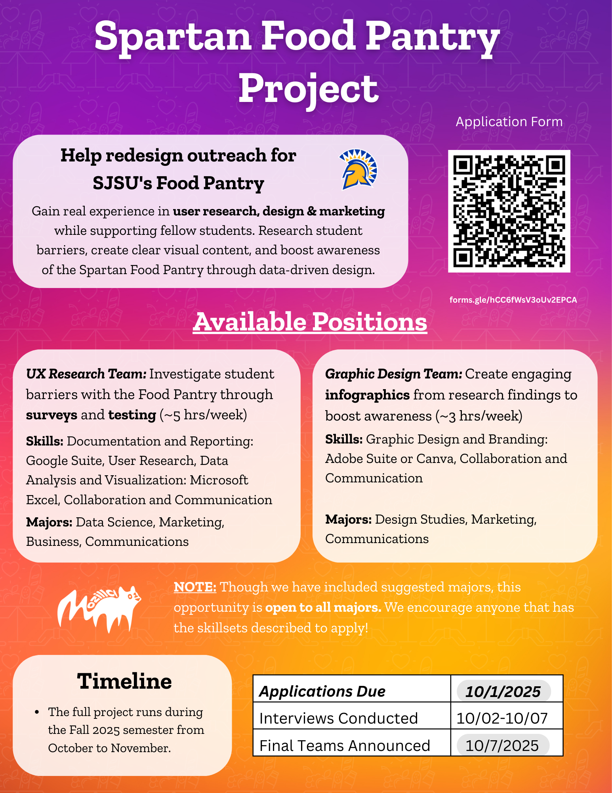

We developed an iOS application using SwiftUI for a user-friendly interface, Python (Flask) for the backend, Firebase for user authentication and database management, and the Gemini API to provide legal guidance. The app helps users understand their options and take informed steps when considering legal action.
Collaboration with Hector Rios
This is my personal portfolio where I showcase my background and the projects I've worked on. It includes a homepage, an "About Me" section, and a collection of my work. Built using HTML and CSS, this site serves as a space to share my projects and collaborations. I'm excited to keep learning and growing my skills!
Developed a To-Do List web application using HTML and CSS to create a clean, responsive, and user-friendly interface. An input field that allows users to enter new tasks, which are then dynamically added to the list using JavaScript. Additional features include the ability to remove individual tasks or clear all tasks at once. The app is designed for simplicity and ease of use, providing an efficient way to manage daily activities.
